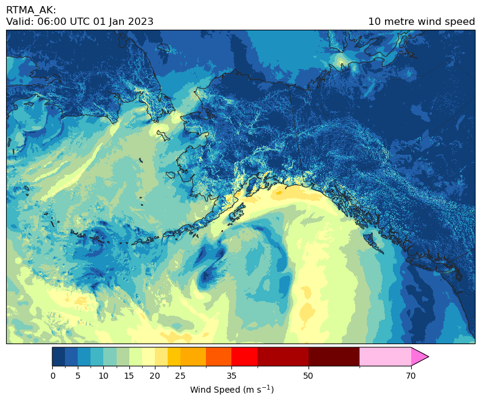

RTMA Data#
This tutorial shows you how to download the Real-Time Mesoscale Analysis (RTMA) products with the Herbie Python package.
[10]:
from herbie import Herbie
from toolbox import EasyMap, pc
from paint.standard2 import cm_tmp, cm_pcp, cm_wind
import matplotlib.pyplot as plt
import cartopy.crs as ccrs
[15]:
H = Herbie(
"2023-01-01 06:00",
model="rtma",
product="anl",
)
✅ Found ┊ model=rtma ┊ product=anl ┊ 2023-Jan-01 06:00 UTC F00 ┊ GRIB2 @ local ┊ IDX @ None
[16]:
# Show available products
H.PRODUCTS
[16]:
{'anl': '', 'err': '', 'ges': '', 'pcp': 'Precipitation Field'}
[17]:
H.SOURCES
[17]:
{'aws': 'https://noaa-rtma-pds.s3.amazonaws.com/rtma2p5.20230101/rtma2p5.t06z.2dvaranl_ndfd.grb2_wexp',
'nomads': 'https://nomads.ncep.noaa.gov/pub/data/nccf/com/rtma/prod/rtma2p5.20230101/rtma2p5.t06z.2dvaranl_ndfd.grb2_wexp'}
Since there is no index file, we need to download the full file before we can look at the contents with wgrib2.
[18]:
H.download()
[18]:
PosixPath('/p/cwfs/blaylock/data/rtma/20230101/rtma2p5.t06z.2dvaranl_ndfd.grb2_wexp')
[21]:
H.read_idx()
[21]:
| grib_message | start_byte | end_byte | range | reference_time | valid_time | variable | level | forecast_time | search_this | |
|---|---|---|---|---|---|---|---|---|---|---|
| 0 | 1 | 0 | 7490118 | 0-7490118 | 2023-01-01 06:00:00 | 2023-01-01 06:00:00 | HGT | surface | anl | :HGT:surface:anl |
| 1 | 2 | 7490118 | 14980236 | 7490118-14980236 | 2023-01-01 06:00:00 | 2023-01-01 06:00:00 | PRES | surface | anl | :PRES:surface:anl |
| 2 | 3 | 14980236 | 21065993 | 14980236-21065993 | 2023-01-01 06:00:00 | 2023-01-01 06:00:00 | TMP | 2 m above ground | anl | :TMP:2 m above ground:anl |
| 3 | 4 | 21065993 | 27151750 | 21065993-27151750 | 2023-01-01 06:00:00 | 2023-01-01 06:00:00 | DPT | 2 m above ground | anl | :DPT:2 m above ground:anl |
| 4 | 5 | 27151750 | 32769386 | 27151750-32769386 | 2023-01-01 06:00:00 | 2023-01-01 06:00:00 | UGRD | 10 m above ground | anl | :UGRD:10 m above ground:anl |
| 5 | 6 | 32769386 | 38387022 | 32769386-38387022 | 2023-01-01 06:00:00 | 2023-01-01 06:00:00 | VGRD | 10 m above ground | anl | :VGRD:10 m above ground:anl |
| 6 | 7 | 38387022 | 45409020 | 38387022-45409020 | 2023-01-01 06:00:00 | 2023-01-01 06:00:00 | SPFH | 2 m above ground | anl | :SPFH:2 m above ground:anl |
| 7 | 8 | 45409020 | 51026656 | 45409020-51026656 | 2023-01-01 06:00:00 | 2023-01-01 06:00:00 | WDIR | 10 m above ground | anl | :WDIR:10 m above ground:anl |
| 8 | 9 | 51026656 | 56644292 | 51026656-56644292 | 2023-01-01 06:00:00 | 2023-01-01 06:00:00 | WIND | 10 m above ground | anl | :WIND:10 m above ground:anl |
| 9 | 10 | 56644292 | 62261928 | 56644292-62261928 | 2023-01-01 06:00:00 | 2023-01-01 06:00:00 | GUST | 10 m above ground | anl | :GUST:10 m above ground:anl |
| 10 | 11 | 62261928 | 68815805 | 62261928-68815805 | 2023-01-01 06:00:00 | 2023-01-01 06:00:00 | VIS | surface | anl | :VIS:surface:anl |
| 11 | 12 | 68815805 | 77242165 | 68815805-77242165 | 2023-01-01 06:00:00 | 2023-01-01 06:00:00 | CEIL | cloud ceiling | anl | :CEIL:cloud ceiling:anl |
| 12 | 13 | 77242165 | 77242165- | 2023-01-01 06:00:00 | 2023-01-01 06:00:00 | TCDC | entire atmosphere (considered as a single layer) | anl | :TCDC:entire atmosphere (considered as a singl... |
[19]:
ds = H.xarray("TMP:2 m")
ds
[19]:
<xarray.Dataset>
Dimensions: (y: 1597, x: 2345)
Coordinates:
time datetime64[ns] 2023-01-01T06:00:00
step timedelta64[ns] 00:00:00
heightAboveGround float64 2.0
latitude (y, x) float64 19.23 19.23 19.24 ... 54.38 54.38 54.37
longitude (y, x) float64 233.7 233.7 233.8 ... 300.9 300.9 301.0
valid_time datetime64[ns] 2023-01-01T06:00:00
Dimensions without coordinates: y, x
Data variables:
t2m (y, x) float32 294.6 294.7 294.6 ... 264.0 264.0 264.0
gribfile_projection object None
Attributes:
GRIB_edition: 2
GRIB_centre: kwbc
GRIB_centreDescription: US National Weather Service - NCEP
GRIB_subCentre: 4
Conventions: CF-1.7
institution: US National Weather Service - NCEP
model: rtma
product: anl
description: CONUS Real-Time Mesoscale Analysis (RTMA)
remote_grib: /p/cwfs/blaylock/data/rtma/20230101/rtma2p5.t06z...
local_grib: /p/cwfs/blaylock/data/rtma/20230101/subset_c8efb...
searchString: TMP:2 m[22]:
ax = EasyMap("50m", crs=ds.herbie.crs, figsize=[10, 8]).STATES().ax
p = ax.pcolormesh(
ds.longitude,
ds.latitude,
ds.t2m,
transform=pc,
**cm_tmp(units="K").cmap_kwargs,
)
plt.colorbar(
p,
ax=ax,
orientation="horizontal",
pad=0.01,
shrink=0.8,
**cm_tmp(units="K").cbar_kwargs,
)
ax.set_title(
f"{ds.model.upper()}: {H.product_description}\nValid: {ds.valid_time.dt.strftime('%H:%M UTC %d %b %Y').item()}",
loc="left",
)
ax.set_title(ds.t2m.GRIB_name, loc="right")
[22]:
Text(1.0, 1.0, '2 metre temperature')

RTMA Precipitation#
The precipitation data is found in a different file, but Herbie will locate it when you produce='pcp'.
[23]:
H = Herbie(
"2023-01-01 06:00",
model="rtma",
product="pcp",
)
✅ Found ┊ model=rtma ┊ product=pcp ┊ 2023-Jan-01 06:00 UTC F00 ┊ GRIB2 @ aws ┊ IDX @ None
[24]:
H.download()
[24]:
PosixPath('/p/cwfs/blaylock/data/rtma/20230101/rtma2p5.2023010106.pcp.184.grb2')
[40]:
ds = H.xarray()
ds["tp"] = ds.tp.where(ds.tp > 0)
ds
/p/home/blaylock/BB_python/Herbie/herbie/archive.py:1001: UserWarning: Will not remove GRIB file because it previously existed.
warnings.warn("Will not remove GRIB file because it previously existed.")
[40]:
<xarray.Dataset>
Dimensions: (y: 1377, x: 2145)
Coordinates:
time datetime64[ns] 2023-01-01T05:00:00
step timedelta64[ns] 01:00:00
heightAboveSea float64 0.0
latitude (y, x) float64 ...
longitude (y, x) float64 ...
valid_time datetime64[ns] ...
Dimensions without coordinates: y, x
Data variables:
tp (y, x) float32 nan nan nan nan nan ... nan nan nan nan
gribfile_projection object None
Attributes:
GRIB_edition: 2
GRIB_centre: kwbc
GRIB_centreDescription: US National Weather Service - NCEP
GRIB_subCentre: 4
Conventions: CF-1.7
institution: US National Weather Service - NCEP
model: rtma
product: pcp
description: CONUS Real-Time Mesoscale Analysis (RTMA)
remote_grib: /p/cwfs/blaylock/data/rtma/20230101/rtma2p5.2023...
local_grib: /p/cwfs/blaylock/data/rtma/20230101/rtma2p5.2023...
searchString: None[41]:
ax = EasyMap("50m", crs=ds.herbie.crs, figsize=[10, 8], dark=True).STATES().OCEAN().ax
p = ax.pcolormesh(
ds.longitude,
ds.latitude,
ds.tp,
transform=pc,
**cm_pcp(units="mm").cmap_kwargs,
)
plt.colorbar(
p,
ax=ax,
orientation="horizontal",
pad=0.01,
shrink=0.8,
**cm_pcp().cbar_kwargs,
)
ax.set_title(
f"{ds.model.upper()}: {H.product_description}\nValid: {ds.valid_time.dt.strftime('%H:%M UTC %d %b %Y').item()}",
loc="left",
)
ax.set_title(ds.tp.GRIB_name, loc="right")
[41]:
Text(1.0, 1.0, 'Total Precipitation')

RTMA Alaska#
[5]:
H = Herbie(
"2023-01-01 06:00",
model="rtma_ak",
product="anl",
)
✅ Found ┊ model=rtma_ak ┊ product=anl ┊ 2023-Jan-01 06:00 UTC F00 ┊ GRIB2 @ local ┊ IDX @ None
[6]:
H.download()
[6]:
PosixPath('/p/cwfs/blaylock/data/rtma_ak/20230101/akrtma.t06z.2dvaranl_ndfd_3p0.grb2')
[7]:
H.read_idx()
[7]:
| grib_message | start_byte | end_byte | range | reference_time | valid_time | variable | level | forecast_time | search_this | |
|---|---|---|---|---|---|---|---|---|---|---|
| 0 | 1 | 0 | 3644462 | 0-3644462 | 2023-01-01 06:00:00 | 2023-01-01 06:00:00 | HGT | surface | anl | :HGT:surface:anl |
| 1 | 2 | 3644462 | 7288924 | 3644462-7288924 | 2023-01-01 06:00:00 | 2023-01-01 06:00:00 | PRES | surface | anl | :PRES:surface:anl |
| 2 | 3 | 7288924 | 10250082 | 7288924-10250082 | 2023-01-01 06:00:00 | 2023-01-01 06:00:00 | TMP | 2 m above ground | anl | :TMP:2 m above ground:anl |
| 3 | 4 | 10250082 | 13211240 | 10250082-13211240 | 2023-01-01 06:00:00 | 2023-01-01 06:00:00 | DPT | 2 m above ground | anl | :DPT:2 m above ground:anl |
| 4 | 5 | 13211240 | 16172398 | 13211240-16172398 | 2023-01-01 06:00:00 | 2023-01-01 06:00:00 | UGRD | 10 m above ground | anl | :UGRD:10 m above ground:anl |
| 5 | 6 | 16172398 | 18905788 | 16172398-18905788 | 2023-01-01 06:00:00 | 2023-01-01 06:00:00 | VGRD | 10 m above ground | anl | :VGRD:10 m above ground:anl |
| 6 | 7 | 18905788 | 21866946 | 18905788-21866946 | 2023-01-01 06:00:00 | 2023-01-01 06:00:00 | SPFH | 2 m above ground | anl | :SPFH:2 m above ground:anl |
| 7 | 8 | 21866946 | 24600336 | 21866946-24600336 | 2023-01-01 06:00:00 | 2023-01-01 06:00:00 | WDIR | 10 m above ground | anl | :WDIR:10 m above ground:anl |
| 8 | 9 | 24600336 | 27333726 | 24600336-27333726 | 2023-01-01 06:00:00 | 2023-01-01 06:00:00 | WIND | 10 m above ground | anl | :WIND:10 m above ground:anl |
| 9 | 10 | 27333726 | 30067116 | 27333726-30067116 | 2023-01-01 06:00:00 | 2023-01-01 06:00:00 | GUST | 10 m above ground | anl | :GUST:10 m above ground:anl |
| 10 | 11 | 30067116 | 33256042 | 30067116-33256042 | 2023-01-01 06:00:00 | 2023-01-01 06:00:00 | VIS | surface | anl | :VIS:surface:anl |
| 11 | 12 | 33256042 | 37356041 | 33256042-37356041 | 2023-01-01 06:00:00 | 2023-01-01 06:00:00 | CEIL | cloud ceiling | anl | :CEIL:cloud ceiling:anl |
| 12 | 13 | 37356041 | 37356041- | 2023-01-01 06:00:00 | 2023-01-01 06:00:00 | TCDC | entire atmosphere (considered as a single layer) | anl | :TCDC:entire atmosphere (considered as a singl... |
[12]:
ds = H.xarray("WIND:10 m")
ds
[12]:
<xarray.Dataset>
Dimensions: (y: 1105, x: 1649)
Coordinates:
time datetime64[ns] 2023-01-01T06:00:00
step timedelta64[ns] 00:00:00
heightAboveGround float64 10.0
latitude (y, x) float64 40.53 40.54 40.55 ... 64.02 64.0 63.98
longitude (y, x) float64 181.4 181.5 181.5 ... 266.2 266.3 266.3
valid_time datetime64[ns] 2023-01-01T06:00:00
Dimensions without coordinates: y, x
Data variables:
si10 (y, x) float32 14.57 14.62 14.68 ... 1.67 1.67 1.68
gribfile_projection object None
Attributes:
GRIB_edition: 2
GRIB_centre: kwbc
GRIB_centreDescription: US National Weather Service - NCEP
GRIB_subCentre: 4
Conventions: CF-1.7
institution: US National Weather Service - NCEP
model: rtma_ak
product: anl
description: Alaska Real-Time Mesoscale Analysis (RTMA)
remote_grib: /p/cwfs/blaylock/data/rtma_ak/20230101/akrtma.t0...
local_grib: /p/cwfs/blaylock/data/rtma_ak/20230101/subset_c8...
searchString: WIND:10 m[15]:
ax = EasyMap("50m", crs=ds.herbie.crs, figsize=[10, 8]).STATES().BORDERS().ax
p = ax.pcolormesh(
ds.longitude,
ds.latitude,
ds.si10,
transform=pc,
**cm_wind().cmap_kwargs,
)
plt.colorbar(
p,
ax=ax,
orientation="horizontal",
pad=0.01,
shrink=0.8,
**cm_wind().cbar_kwargs,
)
ax.set_title(
f"{ds.model.upper()}: {H.product_description}\nValid: {ds.valid_time.dt.strftime('%H:%M UTC %d %b %Y').item()}",
loc="left",
)
ax.set_title(ds.si10.GRIB_name, loc="right")
[15]:
Text(1.0, 1.0, '10 metre wind speed')

Other RTMA domains#
To extend Herbie to retrieve data from other RTMA domains (Alaska, Hawaii, Guam, etc.) the model template will need to be updated.
herbie/models/rtma.py